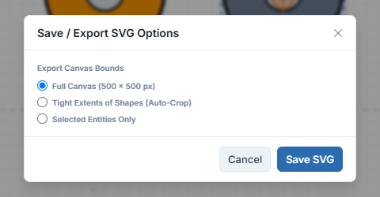
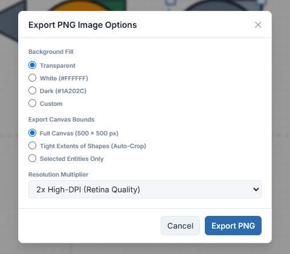
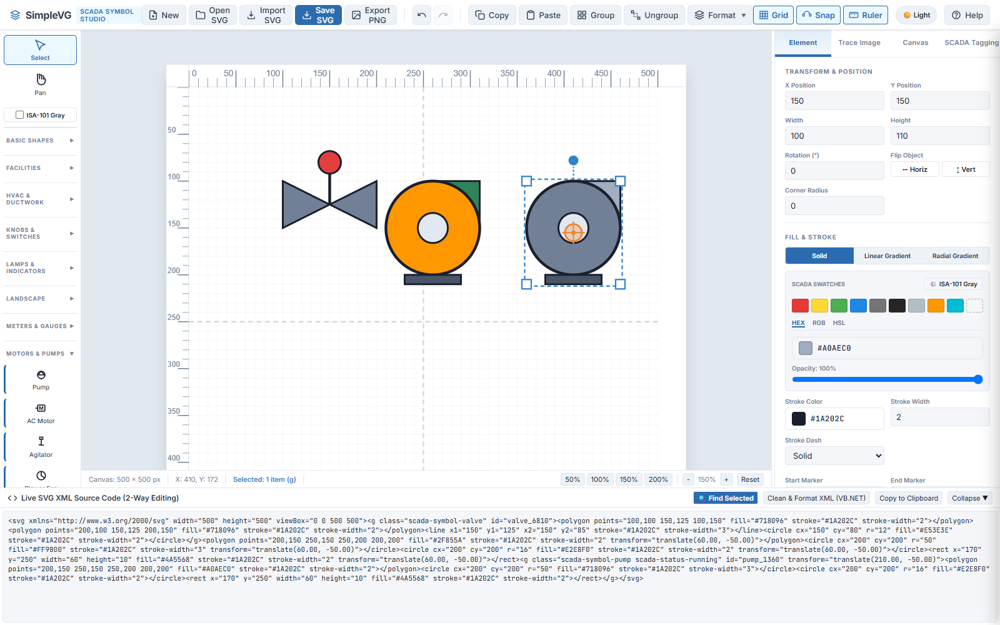

Goal
Save your drawing as an SVG file, choose which part of the canvas to export, export a PNG image, bring files back in, and look at the live SVG code.
SimpleVG works directly in SVG, an open, plain-text vector format, so saving is simply writing out what you drew. We will use the valve and pumps from the last chapter.
Part 1: Save SVG
Click Save SVG in the menu bar. A dialog asks how much of the canvas to save.

Full Canvas
The whole artboard at its full size, including empty space. The dialog shows the current canvas size.
Tight Extents of Shapes (Auto-Crop)
Crops the file tightly around your artwork. This is usually what you want for a symbol or a graphic that will be placed on another screen.
Selected Entities Only
Saves only the shapes or groups you currently have selected, leaving the rest out. Handy for saving one symbol out of a larger drawing.
When you choose a cropped option, a Padding Margin setting lets you leave a little space around the artwork. Click Save SVG in the dialog to download the file.
Note Saved files keep any SCADA tag information, gradients and clean SVG structure, so they can be opened and edited in SimpleVG again later.
Part 2: Export a PNG image
When you need a picture rather than a vector file, for a document or a slide, click Export PNG.

Background Fill
Transparent (good for overlays), White, Dark, or a Custom colour.
Export Canvas Bounds
The same Full Canvas, Tight Extents and Selected Entities choices as the SVG dialog.
Resolution Multiplier
1× for the canvas size, 2× for crisp high-DPI screens, 4× for print quality.
Part 3: Opening and importing
There are two ways to bring an SVG file back in, and the difference matters.
Open SVG
Loads a file and replaces everything on the canvas. Use it to resume work on a drawing you saved earlier.
Import SVG
Adds a file to what you already have. It arrives as a single group, centred and scaled down if it is large. Use it to merge in icons or symbols from elsewhere. Ungroup it if you want to edit the individual parts.
Part 4: The live SVG code
Along the bottom of the window is the Live SVG XML Source Code drawer. Click Expand to open it and see the SVG that your drawing is made of.

The drawer works both ways. Draw on the canvas and the code updates. Edit the code and the canvas follows. This is covered properly in Chapter 11, but two buttons are worth knowing now:
Find Selected (Ctrl+Shift+F) jumps to and highlights the code for whatever is selected on the canvas.
Clean & Format XML tidies the code into neatly indented lines, and Copy to Clipboard copies it.
Recap
Save SVG writes your drawing as an SVG file. Choose Full Canvas, Tight Extents or Selected Entities Only.
Export PNG makes an image, with a choice of background and a 1×, 2× or 4× resolution.
Open SVG replaces the canvas. Import SVG adds to it.
The Live SVG XML drawer shows and edits the underlying code, in both directions.
That is the essentials covered: you can now draw, place symbols, set up your canvas and get your work out as SVG or PNG. The remaining chapters go deeper into lines, fills, arranging, tracing and tagging.